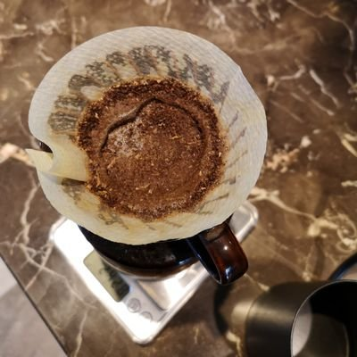

空恋
@kong_lian53017
@xy10171001 只能说我不会。我不认为一定要有一个所谓爱情的结晶，更没有通过生孩子延续基因的想法，在这方面我家里管不着不会管，所以我压根没有繁衍的欲望和压力。我很讨厌被束缚。走到最后要结婚要考虑双方的父母对我来说已经很麻烦了，再生个小孩我真觉得不如一直单身算了。

xy10171001
@xy10171001
@kong_lian53017 两个人关系很稳定以后会想要个后代吧，我只是从结果看很多说不要孩子的朋友，结婚后都基本有孩子。孩黑变孩奴。不是是所有，只是大概率会看到这样。其实如果两个人在一起感觉很安全感很稳定，是可以有。有孩子也会有很多问题，比如双方父母会更多干预你们的生活，经济的压力，角色的转换，责任感。